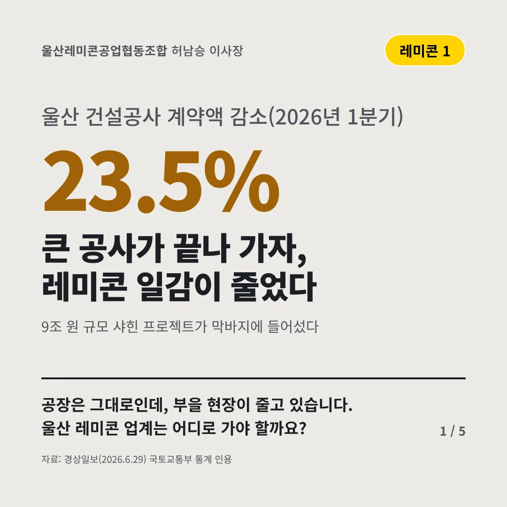
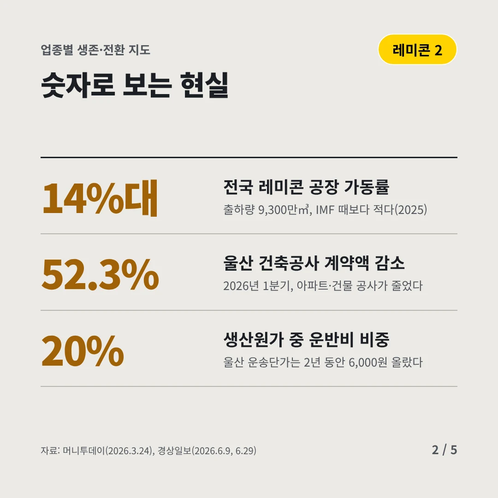
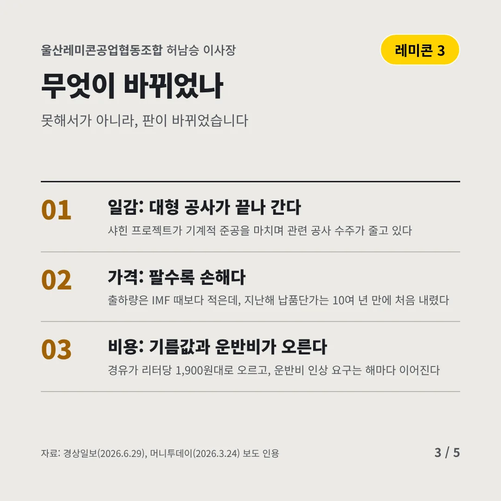
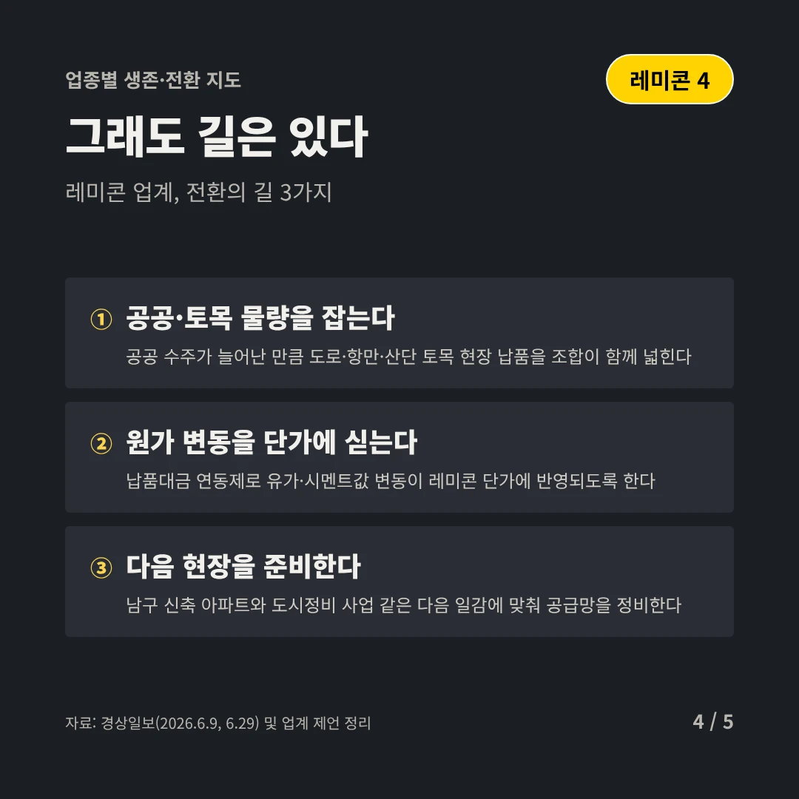
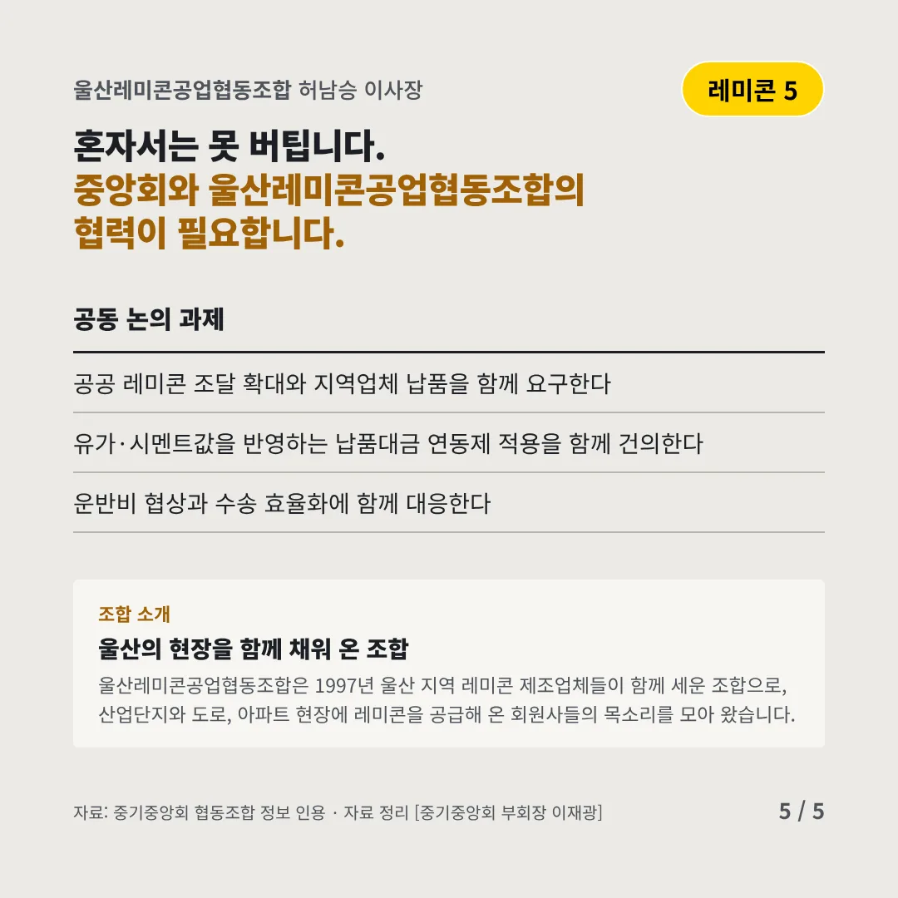
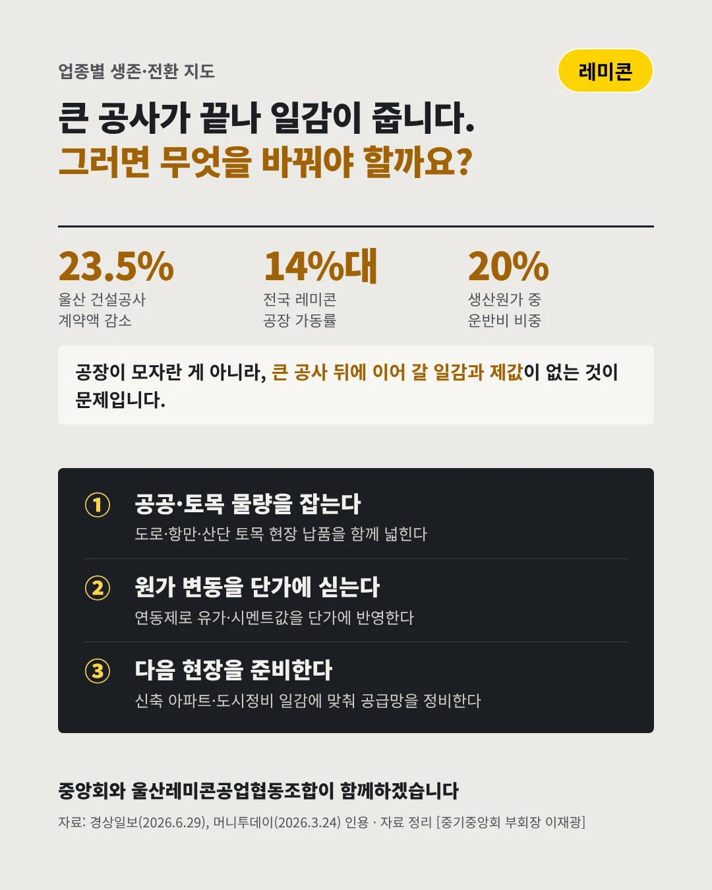

울산레미콘공업협동조합
큰 공사가 끝나 가자, 레미콘 일감이 줄었다
23.5% 울산 건설공사 계약액 감소(2026년 1분기)






공장은 그대로인데, 부을 현장이 줄고 있습니다. 울산 레미콘 업계는 어디로 가야 할까요?
숫자로 보는 현실
- 14%대전국 레미콘 공장 가동률출하량 9,300만㎥, IMF 때보다 적다(2025)
- 52.3%울산 건축공사 계약액 감소2026년 1분기, 아파트·건물 공사가 줄었다
- 20%생산원가 중 운반비 비중울산 운송단가는 2년 동안 6,000원 올랐다
무엇이 바뀌었나
- 일감: 대형 공사가 끝나 간다샤힌 프로젝트가 기계적 준공을 마치며 관련 공사 수주가 줄고 있다
- 가격: 팔수록 손해다출하량은 IMF 때보다 적은데, 지난해 납품단가는 10여 년 만에 처음 내렸다
- 비용: 기름값과 운반비가 오른다경유가 리터당 1,900원대로 오르고, 운반비 인상 요구는 해마다 이어진다
그래도 길은 있다
- 공공·토목 물량을 잡는다공공 수주가 늘어난 만큼 도로·항만·산단 토목 현장 납품을 조합이 함께 넓힌다
- 원가 변동을 단가에 싣는다납품대금 연동제로 유가·시멘트값 변동이 레미콘 단가에 반영되도록 한다
- 다음 현장을 준비한다남구 신축 아파트와 도시정비 사업 같은 다음 일감에 맞춰 공급망을 정비한다
한 장 요약

조합 소개
울산레미콘공업협동조합은 1997년 울산 지역 레미콘 제조업체들이 함께 세운 조합으로, 산업단지와 도로, 아파트 현장에 레미콘을 공급해 온 회원사들의 목소리를 모아 왔습니다.
자료: 경상일보(2026.6.29), 머니투데이(2026.3.24), 경상일보(2026.6.9, 6.29)